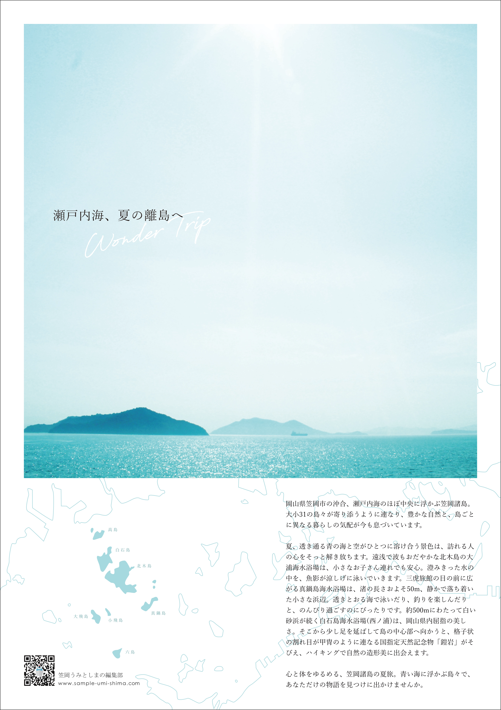
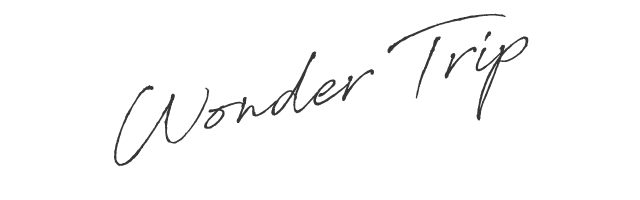

Graphic
瀬戸内海、夏の離島へ『Wonder Trip』
瀬戸内海の中心に浮かぶ岡山県の笠岡諸島をPRするためのツール制作という設定で、架空のポスターを制作しました。

この作品について
Project
瀬戸内海、夏の離島へ『Wonder Trip』

Tool
Adobe Illustrator / Photoshop
Design Concept
全体は白銀比とグリッドを使ってレイアウトを整えながら、情報をすっきりと見せることを心がけました。それぞれの島の情報など、詳細はWEBサイトで確認いただける様にQRコードを載せ、イメージ写真を大々的に使ったインパクトのあるデザインで、まずは笠岡諸島を知ってもらう・興味を持ってもらう「認知」と「興味」の機能を果たす広告づくりを意識し、できるだけシンプルに仕上げました。